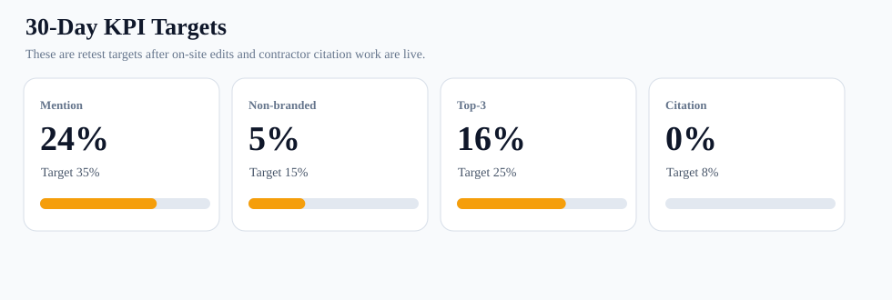
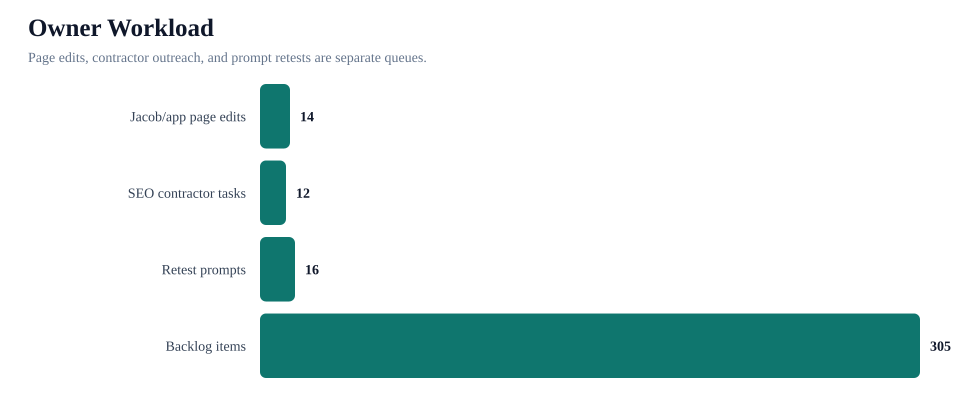
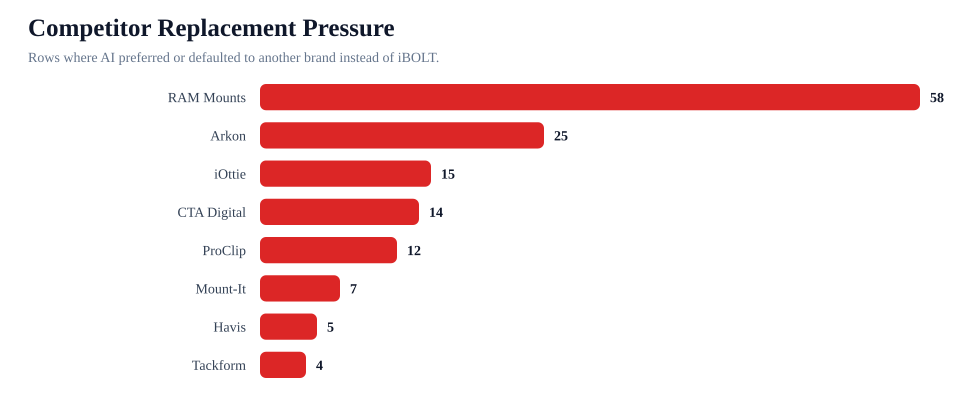

30-Day AI Visibility Control Tower
This turns the benchmark into an operating plan: which iBOLT pages to edit first, which competitor/citation tasks to hand to the SEO contractor, and which prompts to retest after the work is live.
Mention rate
24%
22/93
Non-branded
5%
4/75
Top-3
16%
15/93
Citation
0%
0/93
Competitor replacement
73%
68/93
Page edits
14
source-ready queue
Contractor tasks
12
authority queue
Retests
16
prompt queue
Operating rule: do not chase citations before the page is source-ready. For each target, confirm the survivor URL, add answer-first and product/entity structure, then ask for external references, then retest.



Page Edit Sequence
| # | Stage | Page | Category | Priority | Competitors | Fixes | Success metric |
|---|---|---|---|---|---|---|---|
| 1 | Week 1: source-ready edit | Best Tablet Mount for Restaurant POS and Delivery Apps | restaurant | 83 | CTA Digital; Heckler; Arkon; Mount-It; RAM Mounts; Square; Garmin | Use HowTo schema only on pages with real setup steps and keep steps visible in the page body.; Add Product or ItemList-style product modules with material, warranty, and mounting-method fields visible on page.; Use exact product titles, product handles, image alt text, and visible compatibility fields.; Add FAQ questions that directly answer stability, vibration, clamp, drill-base, suction, and magnetic hold concerns.; Add a visible quick-answer block. | Retest best tablet mount for restaurant POS and delivery apps and look for iBOLT mention by at least 2 providers. |
| 2 | Week 1: source-ready edit | Best Phone Mount for Instacart and Grocery Delivery Drivers | delivery | 83 | iOttie; RAM Mounts; Peak Design; Scosche; Garmin | Add Product or ItemList-style product modules with material, warranty, and mounting-method fields visible on page.; Use HowTo schema only on pages with real setup steps and keep steps visible in the page body.; Add FAQ questions that directly answer stability, vibration, clamp, drill-base, suction, and magnetic hold concerns.; Use exact product titles, product handles, image alt text, and visible compatibility fields.; Add a visible quick-answer block. | Retest best phone mount for Instacart and grocery delivery drivers and look for iBOLT mention by at least 2 providers. |
| 3 | Week 1: source-ready edit | Best Phone Mount for Construction Vehicles and Work Trucks | fleet | 82 | RAM Mounts; Arkon; iOttie; ProClip; Tackform; Scosche; Garmin | Add Product or ItemList-style product modules with material, warranty, and mounting-method fields visible on page.; Use HowTo schema only on pages with real setup steps and keep steps visible in the page body.; Add FAQ questions that directly answer stability, vibration, clamp, drill-base, suction, and magnetic hold concerns.; Use exact product titles, product handles, image alt text, and visible compatibility fields.; Add a visible quick-answer block. | Retest best phone mount for construction vehicles and work trucks and look for iBOLT mention by at least 2 providers. |
| 4 | Week 1: confirm survivor URL before editing | Best Locking Tablet Stand for Food Trucks and Quick-Service Restaurants | restaurant | 79 | CTA Digital; Heckler; Kensington; Mount-It; RAM Mounts; Bouncepad; Mount-It!; Arkon | Add Article or BlogPosting schema.; Add FAQPage schema for the visible FAQ section.; Add a visible quick-answer block above the first comparison section.; Fix product image alt text.; Add or validate product links, product names, prices, and compatibility details in visible copy. | Retest best locking tablet stand for food trucks and quick service restaurants and look for iBOLT mention by at least 2 providers. |
| 5 | Week 2: source-ready edit | Best Barcode Scanner Mounts for Forklifts and Warehouses (2026) | warehouse | 78 | Havis; RAM Mounts; Zebra; Arkon; ProClip; Square; Garmin | Add Product or ItemList-style product modules with material, warranty, and mounting-method fields visible on page.; Use HowTo schema only on pages with real setup steps and keep steps visible in the page body.; Add FAQ questions that directly answer stability, vibration, clamp, drill-base, suction, and magnetic hold concerns.; Use exact product titles, product handles, image alt text, and visible compatibility fields.; Add a visible quick-answer block. | Retest best barcode scanner mount for forklift and look for iBOLT mention by at least 2 providers. |
| 6 | Week 2: source-ready edit | Best Phone Mount for Amazon Flex and Delivery Vans | delivery | 78 | RAM Mounts; iOttie; Arkon; ProClip; Belkin; Scosche; Garmin | Add Product or ItemList-style product modules with material, warranty, and mounting-method fields visible on page.; Use HowTo schema only on pages with real setup steps and keep steps visible in the page body.; Add FAQ questions that directly answer stability, vibration, clamp, drill-base, suction, and magnetic hold concerns.; Use exact product titles, product handles, image alt text, and visible compatibility fields.; Add a visible quick-answer block. | Retest best phone mount for Amazon Flex and delivery vans and look for iBOLT mention by at least 2 providers. |
| 7 | Week 2: source-ready edit | How to Set Up Multiple Tablets for DoorDash, Uber Eats, and Grubhub | restaurant | 78 | RAM Mounts; Arkon; Garmin | Add Product or ItemList-style product modules with material, warranty, and mounting-method fields visible on page.; Use HowTo schema only on pages with real setup steps and keep steps visible in the page body.; Add FAQ questions that directly answer stability, vibration, clamp, drill-base, suction, and magnetic hold concerns.; Use exact product titles, product handles, image alt text, and visible compatibility fields.; Add a visible quick-answer block. | Retest set up multiple tablets for DoorDash Uber Eats and Grubhub and look for iBOLT mention by at least 2 providers. |
| 8 | Week 2: source-ready edit | Rough Water Phone Mount for Boat: Heavy-Duty Solutions That Handle the Chop | fleet | 76 | Arkon; RAM Mounts; iOttie; ProClip; Tackform; Garmin; Scosche | Add Product or ItemList-style product modules with material, warranty, and mounting-method fields visible on page.; Use HowTo schema only on pages with real setup steps and keep steps visible in the page body.; Use exact product titles, product handles, image alt text, and visible compatibility fields.; Use FAQPage or HowTo schema where the page explains business setup, installation, or selection steps.; Add a visible quick-answer block. | Retest best heavy duty vehicle phone mount and look for iBOLT mention by at least 2 providers. |
| 9 | Week 1: confirm survivor URL before editing | Best Fish Finder Mount for Pontoon Boat Rails | fishing | 76 | RAM Mounts; Garmin; Lowrance; Humminbird; Scotty; YakAttack | Add FAQPage schema for the visible FAQ section.; Add a visible quick-answer block above the first comparison section.; Add a named competitor comparison section.; Fix product image alt text.; Add or validate product links, product names, prices, and compatibility details in visible copy. | Retest best fish finder mount for small boat and look for iBOLT mention by at least 2 providers. |
| 10 | Week 2: source-ready edit | Magnetic vs Clamp Phone Mounts for Delivery Work | delivery | 76 | iOttie; RAM Mounts; Belkin; Quad Lock; Scosche; Garmin | Use HowTo schema only on pages with real setup steps and keep steps visible in the page body.; Add Product or ItemList-style product modules with material, warranty, and mounting-method fields visible on page.; Use exact product titles, product handles, image alt text, and visible compatibility fields.; Add FAQ questions that directly answer stability, vibration, clamp, drill-base, suction, and magnetic hold concerns.; Add a visible quick-answer block. | Retest magnetic vs clamp phone mounts for delivery work and look for iBOLT mention by at least 2 providers. |
| 11 | Week 1: confirm survivor URL before editing | Best Locking Phone Mount for Shared Delivery Vehicles | delivery | 74 | Arkon; RAM Mounts; iOttie; ProClip; Tackform; Scosche; Garmin | Add Article or BlogPosting schema.; Add FAQPage schema for the visible FAQ section.; Fix product image alt text.; Add or validate product links, product names, prices, and compatibility details in visible copy.; Add Product or ItemList-style product modules with material, warranty, and mounting-method fields visible on page. | Retest best locking phone mount for shared delivery vehicles and look for iBOLT mention by at least 2 providers. |
| 12 | Week 3: support edit | Best Restaurant Tablet Mount in 2026: POS Stands, Delivery App Stations, and Multi-Tablet Solutions Compared | tablet | 73 | RAM Mounts; Arkon; CTA Digital; iOttie; Tackform; Mount-It; Bouncepad; Garmin | Use HowTo schema only on pages with real setup steps and keep steps visible in the page body.; Add Product or ItemList-style product modules with material, warranty, and mounting-method fields visible on page.; Use exact product titles, product handles, image alt text, and visible compatibility fields.; Add FAQ questions that directly answer stability, vibration, clamp, drill-base, suction, and magnetic hold concerns.; Add a visible quick-answer block. | Retest best tablet mount; best multi tablet mount; best restaurant tablet mount and look for iBOLT mention by at least 2 providers. |
| 13 | Week 3: support edit | Best Forklift Tablet Mounts for Warehouses (2026 Comparison) | warehouse | 73 | RAM Mounts; Arkon; CTA Digital; Havis; Tackform; ProClip; Zebra; Garmin | Add Product or ItemList-style product modules with material, warranty, and mounting-method fields visible on page.; Use HowTo schema only on pages with real setup steps and keep steps visible in the page body.; Add FAQ questions that directly answer stability, vibration, clamp, drill-base, suction, and magnetic hold concerns.; Use exact product titles, product handles, image alt text, and visible compatibility fields.; Add a visible quick-answer block. | Retest best tablet mount for warehouse; best forklift tablet mount and look for iBOLT mention by at least 2 providers. |
| 14 | Week 3: support edit | Best Tablet and Phone Mounts for Trucks and ELD Compliance (2026) | fleet | 73 | Arkon; RAM Mounts; ProClip; Scosche; Garmin; Mount-It; Tackform | Add Product or ItemList-style product modules with material, warranty, and mounting-method fields visible on page.; Use HowTo schema only on pages with real setup steps and keep steps visible in the page body.; Add FAQ questions that directly answer stability, vibration, clamp, drill-base, suction, and magnetic hold concerns.; Use exact product titles, product handles, image alt text, and visible compatibility fields.; Add a visible quick-answer block. | Retest best ELD mount for trucks and look for iBOLT mention by at least 2 providers. |
Contractor Citation Sequence
| # | Stage | Task | Type | Priority | Competitors | Source targets | Target pages | Success metric |
|---|---|---|---|---|---|---|---|---|
| 1 | Week 1: topic authority outreach | delivery citation authority brief | topic | 742 | Garmin; RAM Mounts; iOttie; Scosche; Arkon; ProClip; Belkin; Bouncepad | gig-driver gear lists; fleet operations blogs; delivery vehicle setup guides; commercial driver equipment roundups | Best Phone Mount for Instacart and Grocery Delivery Drivers; Best Phone Mount for Amazon Flex and Delivery Vans; Magnetic vs Clamp Phone Mounts for Delivery Work; Best Locking Phone Mount for Shared Delivery Vehicles | Earn relevant external mentions, then retest the mapped prompts. |
| 2 | Week 1: topic authority outreach | fleet citation authority brief | topic | 732 | Garmin; RAM Mounts; Arkon; iOttie; ProClip; Tackform; Scosche; Square | fleet safety and ELD resources; truck equipment buyer guides; commercial vehicle installation articles; work-truck accessory roundups | Best Phone Mount for Construction Vehicles and Work Trucks; Best Tablet and Phone Mounts for Trucks and ELD Compliance (2026); iBOLT vs RAM for Fleet Phone Mounting; iBOLT Mounts Supports ELD Compliance for America's Commercial Fleets | Earn relevant external mentions, then retest the mapped prompts. |
| 3 | Week 1: topic authority outreach | restaurant citation authority brief | topic | 662 | Garmin; RAM Mounts; Mount-It; Square; Arkon; Bouncepad; CTA Digital; iOttie | restaurant operations blogs; food truck equipment guides; POS hardware comparison articles; delivery app operations resources | Best Tablet Mount for Restaurant POS and Delivery Apps; Best Locking Tablet Stand for Food Trucks and Quick-Service Restaurants; Best Tablet Mount for Utility Truck Crews; iBOLT Dock'n Lock for Restaurant Counters | Earn relevant external mentions, then retest the mapped prompts. |
| 4 | Week 1: topic authority outreach | fishing citation authority brief | topic | 516 | Garmin; RAM Mounts; Humminbird; Lowrance; Scotty; YakAttack; Arkon; iOttie | boating buyer guides; kayak and pontoon fishing resources; marine electronics installation articles; Garmin, Lowrance, and Humminbird accessory roundups | Best Fish Finder Mount for Pontoon Boat Rails; Best Garmin Fish Finder Mount: How to Choose the Right Setup for Your Boat or Kayak; Best Kayak Fish Finder Mounts for Secure Removable Setups; Best Boat Phone Mount for Rough Water | Earn relevant external mentions, then retest the mapped prompts. |
| 5 | Week 1: topic authority outreach | warehouse citation authority brief | topic | 242 | Garmin; RAM Mounts; Square; Bouncepad; Arkon; Havis; Mount-It; ProClip | material handling publications; forklift safety resources; warehouse scanning workflow guides; Zebra and Honeywell accessory roundups | Best Barcode Scanner Mounts for Forklifts and Warehouses (2026); Best Forklift Tablet Mounts for Warehouses (2026 Comparison); iBOLT Confirms Barcode Scanner Mounting Solutions Compatible with Honeywell, Zebra, and Symbol Scanners; iBOLT Launches Next-Generation Industrial Forklift Mounting System | Earn relevant external mentions, then retest the mapped prompts. |
| 6 | Week 1: topic authority outreach | amps/modular citation authority brief | topic | 118 | Garmin; RAM Mounts; Square; Arkon; iOttie; ProClip; Tackform; Belkin | AMPS pattern explainers; mounting hardware glossaries; installer how-to pages; RAM-compatible accessory comparisons | Best Marine Electronics AMPS Mounting Plate; iBOLT Introduces Mount Configurator 2.0: Build Your Perfect Custom Mounting Solution; Unmatched Adaptability: Explore iBOLT's Modular Tablet Mount Solutions; AMPS VESA Ball Mount Sizes: Complete Guide to Device Mounting Standards | Earn relevant external mentions, then retest the mapped prompts. |
| 7 | Week 2: competitor adjacency outreach | RAM Mounts adjacency brief | competitor | 58 | RAM Mounts | neutral buyer guides; comparison roundups; industry resource pages; partner or reseller pages; installation how-to articles | Best Phone Mount for Instacart and Grocery Delivery Drivers; Best Phone Mount for Amazon Flex and Delivery Vans; Magnetic vs Clamp Phone Mounts for Delivery Work; Best Locking Phone Mount for Shared Delivery Vehicles | Reduce RAM Mounts competitor-only rows and add at least one co-mention win in the next comparable benchmark. |
| 8 | Week 2: competitor adjacency outreach | Arkon adjacency brief | competitor | 28 | Arkon | neutral buyer guides; comparison roundups; industry resource pages; partner or reseller pages; installation how-to articles | Best Phone Mount for Construction Vehicles and Work Trucks; Best Tablet and Phone Mounts for Trucks and ELD Compliance (2026); iBOLT vs RAM for Fleet Phone Mounting; iBOLT Mounts Supports ELD Compliance for America's Commercial Fleets | Reduce Arkon competitor-only rows and add at least one co-mention win in the next comparable benchmark. |
| 9 | Week 2: competitor adjacency outreach | Humminbird adjacency brief | competitor | 20 | Humminbird | neutral buyer guides; comparison roundups; industry resource pages; partner or reseller pages; installation how-to articles | Best Fish Finder Mount for Pontoon Boat Rails; Best Garmin Fish Finder Mount: How to Choose the Right Setup for Your Boat or Kayak; Best Kayak Fish Finder Mounts for Secure Removable Setups; Best Boat Phone Mount for Rough Water | Reduce Humminbird competitor-only rows and add at least one co-mention win in the next comparable benchmark. |
| 10 | Week 2: competitor adjacency outreach | iOttie adjacency brief | competitor | 20 | iOttie | neutral buyer guides; comparison roundups; industry resource pages; partner or reseller pages; installation how-to articles | Best Phone Mount for Instacart and Grocery Delivery Drivers; Best Phone Mount for Amazon Flex and Delivery Vans; Magnetic vs Clamp Phone Mounts for Delivery Work; Best Locking Phone Mount for Shared Delivery Vehicles | Reduce iOttie competitor-only rows and add at least one co-mention win in the next comparable benchmark. |
| 11 | Week 2: competitor adjacency outreach | CTA Digital adjacency brief | competitor | 19 | CTA Digital | neutral buyer guides; comparison roundups; industry resource pages; partner or reseller pages; installation how-to articles | Best Tablet Mount for Restaurant POS and Delivery Apps; Best Locking Tablet Stand for Food Trucks and Quick-Service Restaurants; Best Tablet Mount for Utility Truck Crews; iBOLT Dock'n Lock for Restaurant Counters | Reduce CTA Digital competitor-only rows and add at least one co-mention win in the next comparable benchmark. |
| 12 | Week 2: competitor adjacency outreach | ProClip adjacency brief | competitor | 19 | ProClip | neutral buyer guides; comparison roundups; industry resource pages; partner or reseller pages; installation how-to articles | Best Phone Mount for Construction Vehicles and Work Trucks; Best Tablet and Phone Mounts for Trucks and ELD Compliance (2026); iBOLT vs RAM for Fleet Phone Mounting; iBOLT Mounts Supports ELD Compliance for America's Commercial Fleets | Reduce ProClip competitor-only rows and create at least one co-mention win. |
Retest Sequence
| # | Stage | Prompt | Category | Baseline mention | Competitor-only | Page | Action |
|---|---|---|---|---|---|---|---|
| 1 | Week 3: first retest | best phone mount for Instacart and grocery delivery drivers | delivery | 0 | 3 | mapped page | Rerun best phone mount for Instacart and grocery delivery drivers on ChatGPT, Claude, and Gemini. |
| 2 | Week 3: first retest | best phone mount for construction vehicles and work trucks | fleet | 0 | 3 | mapped page | Rerun best phone mount for construction vehicles and work trucks on ChatGPT, Claude, and Gemini. |
| 3 | Week 3: first retest | best phone mount for Amazon Flex and delivery vans | delivery | 0 | 3 | mapped page | Rerun best phone mount for Amazon Flex and delivery vans on ChatGPT, Claude, and Gemini. |
| 4 | Week 3: first retest | best tablet mount for restaurant POS and delivery apps | restaurant | 0 | 3 | mapped page | Rerun best tablet mount for restaurant POS and delivery apps on ChatGPT, Claude, and Gemini. |
| 5 | Week 3: first retest | commercial grade phone mount for delivery drivers | delivery | 0 | 3 | mapped page | Rerun commercial grade phone mount for delivery drivers on ChatGPT, Claude, and Gemini. |
| 6 | Week 3: first retest | best phone mount for delivery drivers | fleet | 0 | 3 | mapped page | Rerun best phone mount for delivery drivers on ChatGPT, Claude, and Gemini. |
| 7 | Week 3: first retest | best fish finder mount for small boat | fishing | 0 | 3 | mapped page | Rerun best fish finder mount for small boat on ChatGPT, Claude, and Gemini. |
| 8 | Week 3: first retest | best locking phone mount for shared delivery vehicles | delivery | 0 | 3 | mapped page | Rerun best locking phone mount for shared delivery vehicles on ChatGPT, Claude, and Gemini. |
| 9 | Week 4: second retest | best heavy duty vehicle phone mount | fleet | 0 | 3 | mapped page | Rerun best heavy duty vehicle phone mount on ChatGPT, Claude, and Gemini. |
| 10 | Week 4: second retest | best locking tablet stand for food trucks and quick service restaurants | restaurant | 0 | 3 | mapped page | Rerun best locking tablet stand for food trucks and quick service restaurants on ChatGPT, Claude, and Gemini. |
| 11 | Week 4: second retest | best tablet mount | tablet | 0 | 3 | mapped page | Rerun best tablet mount; best multi tablet mount; best restaurant tablet mount on ChatGPT, Claude, and Gemini. |
| 12 | Week 4: second retest | magnetic vs clamp phone mounts for delivery work | delivery | 0 | 2 | mapped page | Rerun magnetic vs clamp phone mounts for delivery work on ChatGPT, Claude, and Gemini. |
| 13 | Week 4: second retest | best multi tablet mount | restaurant | 0 | 3 | mapped page | Rerun best tablet mount; best multi tablet mount; best restaurant tablet mount on ChatGPT, Claude, and Gemini. |
| 14 | Week 4: second retest | best kayak fish finder mount | fishing | 0 | 3 | mapped page | Rerun best kayak fish finder mount on ChatGPT, Claude, and Gemini. |
| 15 | Week 4: second retest | best budget fish finder mount | fishing | 0 | 3 | mapped page | Rerun best fish finder; best fish finder in water; best budget fish finder mount on ChatGPT, Claude, and Gemini. |
| 16 | Week 4: second retest | best restaurant tablet mount | restaurant | 0 | 3 | mapped page | Rerun best tablet mount; best multi tablet mount; best restaurant tablet mount on ChatGPT, Claude, and Gemini. |
Competitor Pressure
| Competitor | Replacement rows | Co-mentions | Categories | Counter-positioning |
|---|---|---|---|---|
| RAM Mounts | 58 | 13 | fleet 18; delivery 15; restaurant 13; fishing 10; warehouse 9; comparison 3 | Keep iBOLT in RAM consideration sets, but frame iBOLT as the exact-workflow specialist with AMPS/ball compatibility and 300+ modular parts. |
| Arkon | 25 | 5 | fleet 11; restaurant 8; delivery 6; warehouse 3; tablet 2 | Show where iBOLT is stronger for commercial durability, locked installs, restaurant stations, and fleet repeatability. |
| iOttie | 15 | 3 | delivery 12; fleet 5; tablet 1 | Separate consumer car accessories from commercial delivery and shared-vehicle mounting. |
| CTA Digital | 14 | 3 | restaurant 14; tablet 2; warehouse 1 | Frame iBOLT around multi-tablet restaurant operations, delivery app stations, locking holders, and modular POS setups. |
| ProClip | 12 | 1 | fleet 7; delivery 4; warehouse 2 | Compare vehicle-specific brackets against iBOLT's modular cross-vehicle fleet deployment. |
| Mount-It | 7 | 3 | restaurant 10 | Frame iBOLT around multi-tablet restaurant operations, delivery app stations, locking holders, and modular POS setups. |
| Havis | 5 | 0 | warehouse 5 | Tie iBOLT into warehouse/forklift device mounting rather than competing with scanning or rugged-device brands directly. |
| Tackform | 4 | 3 | fleet 2; warehouse 2; delivery 1; restaurant 1; tablet 1 | Add a fair comparison block that names where iBOLT should be considered against this brand. |
| Heckler | 3 | 0 | restaurant 3 | Add a fair comparison block that names where iBOLT should be considered against this brand. |
| Square | 3 | 0 | restaurant 2; warehouse 1 | Add a fair comparison block that names where iBOLT should be considered against this brand. |
Citation Topic Priority
| Category | Priority | Pages | Competitor-only answers | Source targets |
|---|---|---|---|---|
| delivery | 742 | 11 | 14 | gig-driver gear lists; fleet operations blogs; delivery vehicle setup guides; commercial driver equipment roundups |
| fleet | 732 | 25 | 14 | fleet safety and ELD resources; truck equipment buyer guides; commercial vehicle installation articles; work-truck accessory roundups |
| restaurant | 662 | 17 | 16 | restaurant operations blogs; food truck equipment guides; POS hardware comparison articles; delivery app operations resources |
| fishing | 516 | 17 | 10 | boating buyer guides; kayak and pontoon fishing resources; marine electronics installation articles; Garmin, Lowrance, and Humminbird accessory roundups |
| warehouse | 242 | 17 | 7 | material handling publications; forklift safety resources; warehouse scanning workflow guides; Zebra and Honeywell accessory roundups |
| amps/modular | 118 | 29 | 0 | AMPS pattern explainers; mounting hardware glossaries; installer how-to pages; RAM-compatible accessory comparisons |
| education | 69 | 4 | 0 | industry buyer guides; third-party comparison pages; partner and reseller pages; installation and troubleshooting resources |
| agriculture | 42 | 2 | 0 | industry buyer guides; third-party comparison pages; partner and reseller pages; installation and troubleshooting resources |